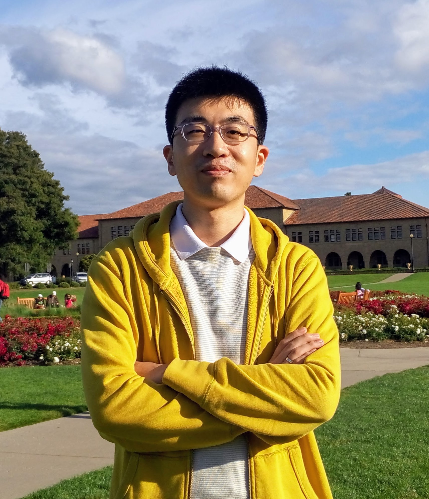

Wenrui Diao's Homepage (刁文瑞教授-山东大学-个人主页)
|  | Wenrui Diao 刁文瑞Ph.D., The Chinese University of Hong Kong, 2017 Qilu Young Professor (“齐鲁青年学者”特聘教授) School of Cyber Science and Technology, Shandong University 山东大学 网络空间安全学院 Qingdao, China Email: diaowenrui [AT] sdu.edu.cn [Google Scholar] [DBLP] [Faculty Page] |
News:
>>> Mar 2021: I will serve as TPC Member for ICICS 2021.
>>> Jan 2021: I will serve as TPC Member for SiMLA 2021.
>>> Dec 2020: I will serve as TPC Member for ESORICS 2021.
>>> Nov 2020: One paper accepted by IEEE S&P 2021.
>>> Aug 2020: I will serve as TPC Member for IEEE MASS 2020.
>>> May 2020: I received ACM SIGSAC China Rising Star Award (ACM SIGSAC China新星奖).
>>> May 2020: I will serve as TPC Member for ICISSP 2021.
>>> Apr 2020: One paper accepted by WiSec 2020.
>>> Jan 2020: I will serve as TPC Member for SiMLA 2020.
招生意向
在网络空间安全专业（网络与系统安全方向）招收博士、硕士研究生，将主要开展国际水准的移动安全、物联网安全、侧信道分析、代码分析等方向研究。研究项目获得国家自然科学基金及山东大学高层次人才学科建设经费支持。研究成果发表于IEEE S&P、CCS、NDSS、RAID、DSN、ESORICS等多个系统安全领域顶级/著名国际会议。欢迎对于系统安全研究具有浓厚兴趣，具备良好编程动手能力及系统软硬件知识的同学报考。
课题组为科研表现优异的研究生提供多种形式的国内/海外学术交流访问机会，为优秀硕士生提供硕转博衔接培养机会，为优秀博士生提供海外顶级系统安全实验室访问机会。
有意报考同学请通过电子邮件同我取得联系。报考硕士研究生的同学需具备信息安全、计算机、软件工程等电子信息类本科专业背景，请提供【简历】+【本科成绩单】。申请博士研究生的同学需具备计算机安全或相关领域（如软件工程、操作系统、编程语言等）研究基础及论文发表经历，请提供【简历】+【论文代表作】。
P.S., 山东大学为中央网信办和教育部一流网络安全学院建设示范项目高校。网络空间安全学院位于山东大学青岛校区，地处青岛市“蓝色硅谷”核心区，依山傍海，空气清新，景色宜人，校园距离海边直线距离不足500米。
 |
Biography
I am a Qilu Young Professor (“齐鲁青年学者”特聘教授) in School of Cyber Science and Technology at Shandong University. Before joining SDU, I obtained my Ph.D. degree from The Chinese University of Hong Kong, under the supervision of Prof. Kehuan Zhang. Also, I ever visited / worked / interned at Jinan University, Indiana University Bloomington, City University of Hong Kong, Syniverse Technologies, and EMC Labs China. My research focuses on system security, especially mobile security and IoT security. Also, I work closely with Prof. Zhou Li and Prof. XiaoFeng Wang. I was a founding member of System Security Lab of CUHK.
Education
Aug 2013 - Aug 2017: Ph.D. in Information Engineering, supervised by Prof. Kehuan Zhang, The Chinese University of Hong Kong, Hong Kong.
Sep 2016 - Jan 2017: Visiting Ph.D. Student, supervised by Prof. XiaoFeng Wang, Indiana University, Bloomington, IN, USA.
Sep 2010 - Jun 2011: M.Sc. in Information Engineering, The Chinese University of Hong Kong, Hong Kong.
Sep 2006 - Jun 2010: B.Sc. in Information Security, Shandong University, Jinan, China.
Experience
Jun 2019 - Present: Professor, Shandong University, Qingdao, China.
Sep 2017 - Jun 2019: Associate Professor, Jinan University, Guangzhou, China.
Feb 2013 - Jul 2013: Research Assistant, supervised by Prof. Cong Wang, City University of Hong Kong, Hong Kong.
Nov 2011 - Jan 2013: System Application Engineer, Syniverse Technologies AP, Hong Kong.
Jun 2011 - Sep 2011: Software Engineer Intern, EMC Labs China, Shanghai, China.
Publications
Publications at top-tier venues (6 papers): IEEE S&P (’21, ’16), CCS (’15, ’14), NDSS (’19, ’18)
[IEEE S&P’21] Rui Li, Wenrui Diao, Zhou Li, Jianqi Du, and Shanqing Guo. Android Custom Permissions Demystified: From Privilege Escalation to Design Shortcomings. The 42nd IEEE Symposium on Security and Privacy, 2021. [Top] [CCF A]
[Security’20] Yuxuan Chen, Xuejing Yuan, Jiangshan Zhang, Yue Zhao, Shengzhi Zhang, Kai Chen, and XiaoFeng Wang. Devil's Whisper: A General Approach for Physical Adversarial Attacks against Commercial Black-box Speech Recognition Devices. The 29th USENIX Security Symposium, 2020. [Top] [CCF A]
[ACSAC’19] Zheng Li, Chengyu Hu, Yang Zhang, and Shanqing Guo. How to Prove Your Model Belongs to You: A Blind-Watermark based Framework to Protect Intellectual Property of DNN. The 35th Annual Computer Security Applications Conference, 2019. [CCF B]
[RAID’19] Wenrui Diao, Yue Zhang, Li Zhang, Zhou Li, Fenghao Xu, Xiaorui Pan, Xiangyu Liu, Jian Weng, Kehuan Zhang, and XiaoFeng Wang. Kindness is a Risky Business: On the Usage of the Accessibility APIs in Android. The 22nd International Symposium on Research in Attacks, Intrusions and Defenses, 2019. [CCF B]
[RAID’19] Li Zhang, Jiongyi Chen, Wenrui Diao, Shanqing Guo, Jian Weng, and Kehuan Zhang. CryptoREX: Large-scale Analysis of Cryptographic Misuse in IoT Devices. The 22nd International Symposium on Research in Attacks, Intrusions and Defenses, Beijing, China. September 23-25, 2019. [CCF B]
[DSN’19] Jiongyi Chen, Chaoshun Zuo, Wenrui Diao, Shuaike Dong, Qingchuan Zhao, Menghan Sun, Zhiqiang Lin, Yinqian Zhang, and Kehuan Zhang. Your IoTs Are (Not) Mine: On the Remote Binding Between IoT Devices and Users. The 49th IEEE/IFIP International Conference on Dependable Systems and Networks, 2019. [CCF B]
[NDSS’19] Fenghao Xu, Wenrui Diao, Zhou Li, Jiongyi Chen, and Kehuan Zhang. BadBluetooth: Breaking Android Security Mechanisms via Malicious Bluetooth Peripherals. The 26th Annual Network and Distributed System Security Symposium, 2019. [Top] [CCF B]
[Security’18] Xuejing Yuan, Yuxuan Chen, Yue Zhao, Yunhui Long, Xiaokang Liu, Kai Chen, Shengzhi Zhang, Heqing Huang, XiaoFeng Wang, and Carl A. Gunter. CommanderSong: A Systematic Approach for Practical Adversarial Voice Recognition. The 27th USENIX Security Symposium, 2018. [Top] [CCF A]
[ACSAC’18] Chengbin Pang, Yunlan Du, Bing Mao, and Shanqing Guo. Mapping to Bits: Efficiently Detecting Type Confusion Errors. The 34th Annual Computer Security Applications Conference, 2018. [CCF B]
[ICSME’18] Chao Chen, Wenrui Diao, Yingpei Zeng, Shanqing Guo, and Chengyu Hu. DRLgencert: Deep Learning-based Automated Testing of Certificate Verification in SSL/TLS Implementations. The 34th IEEE International Conference on Software Maintenance and Evolution, 2018. [CCF B]
[DSN’18] Jia Chen, Ge Han, Shanqing Guo, and Wenrui Diao. FragDroid: Automated User Interface Interaction with Activity and Fragment Analysis in Android Applications. The 48th IEEE/IFIP International Conference on Dependable Systems and Networks, 2018. [CCF B]
[NDSS’18] Jiongyi Chen, Wenrui Diao, Qingchuan Zhao, Chaoshun Zuo, Zhiqiang Lin, XiaoFeng Wang, Wing Cheong Lau, Menghan Sun, Ronghai Yang, and Kehuan Zhang. IoTFuzzer: Discovering Memory Corruptions in IoT Through App-based Fuzzing. The 25th Annual Network and Distributed System Security Symposium, 2018. [Top] [CCF B]
[ISSRE’18] Fanghua Zhao, Linan Gao, Yang Zhang, Zeyu Wang, Bo Wang, and Shanqing Guo. You Are Where You App: An Assessment on Location Privacy of Social Applications. The 29th IEEE International Symposium on Software Reliability Engineering, 2018. [CCF B]
Professional Activities
TPC Member:
European Symposium on Research in Computer Security (ESORICS): 2021
International Conference on Information Systems Security and Privacy (ICISSP): 2020, 2021
IEEE International Conference on Mobile Ad-Hoc and Smart Systems (MASS): 2020
ACNS Workshop on Security in Machine Learning and its Applications (SiMLA): 2020, 2021
ACM Conference on Computer and Communications Security (CCS): 2018, 2019
Reviewer:
IEEE Transactions on Information Forensics and Security
Journal of Network and Computer Applications (Elsevier)
Applied Computing and Informatics (Elsevier)
The Computer Journal (Oxford)
Cybersecurity (Springer)
Journal on Communications (通讯学报)
External Reviewer:
Network and Distributed System Security Symposium (NDSS): 2018
ACM Conference on Computer and Communications Security (CCS): 2014, 2015, 2016, 2017
International Symposium on Research in Attacks, Intrusions and Defenses (RAID): 2017
IEEE European Symposium on Security and Privacy (IEEE EuroS&P): 2017
ACM Asia Conference on Computer and Communications Security (ASIACCS): 2016, 2017
EAI International Conference on Security and Privacy in Communication Networks (SecureComm): 2016
USENIX Workshop on Offensive Technologies (WOOT): 2016
Information Security Conference (ISC): 2014
Invited Talks
BadBluetooth: Breaking Android Security Mechanisms via Malicious Bluetooth Peripherals
Security Threats to Android System: Exploration, Understanding, and Defense
May 2017: Shandong University, Jinan, China
Apr 2017: Shanghai Jiao Tong University, Shanghai, China
Teaching
Instructor@SDU:
04630130 - Software Security (软件安全): 2020 Fall
04630080 - Computer Networks (计算机网络): 2021 Spring, 2020 Spring
0740003 - Computing System Security (计算系统安全): 2020 Fall, 2019 Fall
Instructor@JNU:
08066002 - Secure Programming (安全编程): 2018 Fall
08066003 - Secure Programming Lab (安全编程实验): 2018 Fall
Part-time Instructor@CUHK:
IEMS 5710 - Cryptography, Information Security & Privacy: 2015 Spring
Teaching Assistant@CUHK:
IERG 4090 - Networking Protocols and Systems: 2016 Spring, 2017 Spring
IERG 4831 - Networking Laboratory I: 2016 Spring, 2017 Spring
IERG 3921 - Information Engineering Lab: 2015 Fall
IERG 4210 - Web Programming and Security: 2015 Spring
IERG 3310 - Computer Networks: 2014 Fall
Awards
2020: ACM SIGSAC China Rising Star Award (ACM SIGSAC China新星奖), 2019
2019: Qilu Young Scholar, Shandong University (山东大学“齐鲁青年学者”)
2017: PETS 2017 Stipends, The 17th Privacy Enhancing Technologies Symposium
2017: Reaching Out Award 2016/17, HKSAR Government Scholarship Fund
2016: IEEE S&P 2016 Student Travel Grants, The 37th IEEE Symposium on Security and Privacy
2012: Dean’s List 2010-2011, Faculty of Engineering, CUHK
Students
Rui Li (MS Student, 2019 - )
Jin Zhang (MS Student, 2019 - )
Jianqi Du (Ph.D. Student, 2020 - )
Shishuai Yang (MS Student, 2020 - )
Guangwei Tian (MS Student, 2020 - )
Chennan Zhang (MS Student, 2020 - )
Alumni:
Li Zhang (Co-supervised MS Student at Jinan University, Graduated in 2019)
Publications (first author): RAID 2019
Awards: RAID 2019 Student Travel Grants